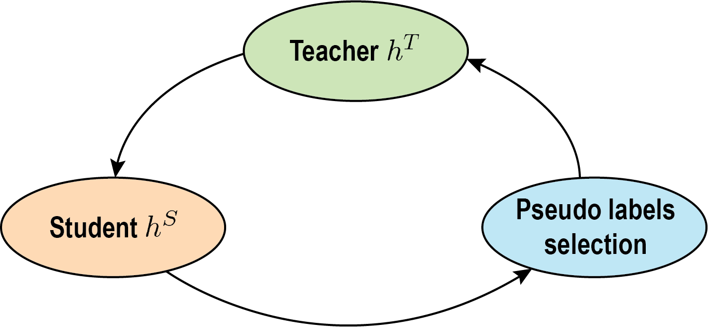
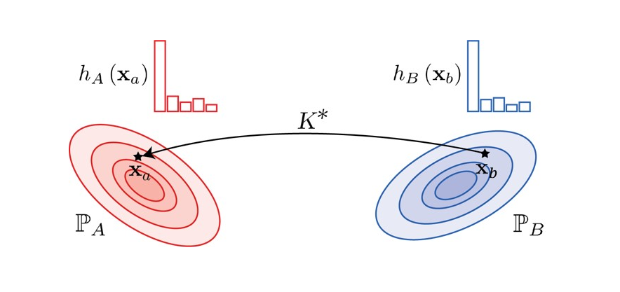
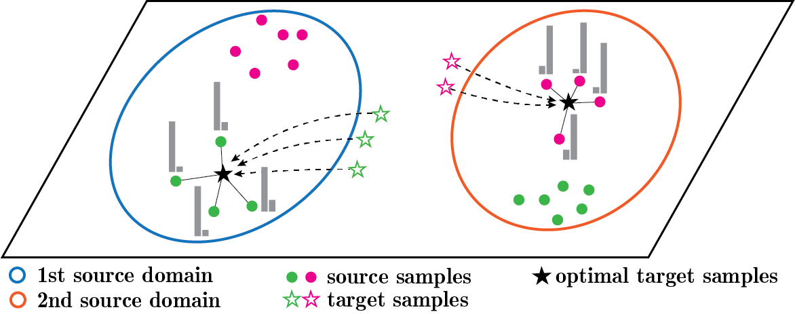
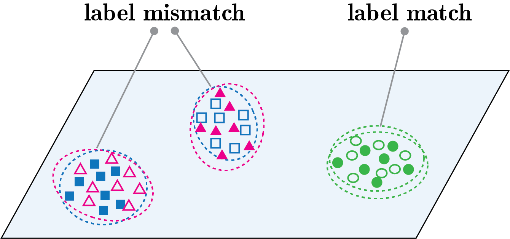
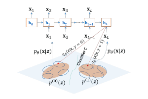
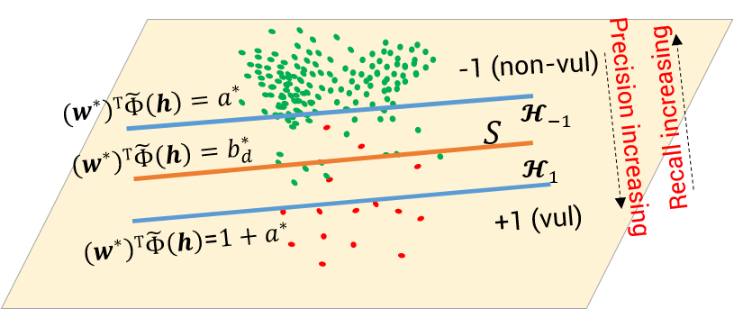
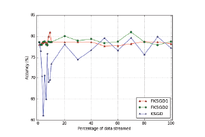

Research Interest
I am an AI researcher with 8+ years of experience in Deep Learning, Machine Learning, Computer Vision, and NLP. My research, presented at leading AI conferences such as ICML, ICCV, ICLR, UAI, and IJCAI, covers a broad range of topics, including deepfake detection, multi-modal learning, generative AI, LLM safety, domain adaptation, and transfer learning. I have 3+ years of experience mentoring 200+ students at Monash University and organizing Kaggle competitions to foster student engagement.
Hobbies
I am passionate about sports, particularly badminton, soccer, and table tennis. I also enjoy playing the guitar and continually expanding my knowledge through new courses.
Contact
I look forward to engaging in stimulating discussions and potential collaborations with you. Please feel free to contact me through:
Selected Publications
|  |
Cycle Class Consistency with Distributional Optimal Transport and Knowledge Distillation for Unsupervised Domain Adaptation
Tuan Nguyen, Van Nguyen, Trung Le, He Zhao, Quan Hung Tran, and Dinh Phung. UAI, 2022. |
|  |
TIDOT: A Teacher Imitation Learning Approach for Domain Adaptation with Optimal Transport
Tuan Nguyen, Trung Le, Nhan Dam, Quan Hung Tran, Truyen Nguyen, and Dinh Phung. IJCAI, 2021. |
|  |
MOST: Multi-Source Domain Adaptation via Optimal Transport for Student-Teacher Learning
Tuan Nguyen, Trung Le, He Zhao, Quan Hung Tran, Truyen Nguyen, and Dinh Phung. UAI, 2021. |
|  |
LAMDA: Label Matching Deep Domain Adaptation
Trung Le, Tuan Nguyen, Nhat Ho, Hung Bui, and Dinh Phung. ICML, 2021. |
 |
STEM: An approach to Multi-source Domain Adaptation with Guarantees
Van-Anh Nguyen, Tuan Nguyen, Trung Le, Quan Hung Tran, and Dinh Phung. ICCV, 2021. |
|  |
Maximal divergence sequential autoencoder for binary software vulnerability detection
Tue Le, Tuan Nguyen, Trung Le, Dinh Phung, Paul Montague, Olivier De Vel and Lizhen Qu. ICLR, 2018. |
|  |
Deep cost-sensitive kernel machine for binary software vulnerability detection
Tuan Nguyen, Trung Le, Khanh Nguyen, Olivier de Vel, Paul Montague, John Grundy, and Dinh Phung. PAKDD, 2020. |
|  |
Fuzzy Kernel Stochastic Gradient Descent Machines
Tuan Nguyen, Phuong Duong, Trung Le, Anh Le, Viet Ngo, Dat Tran and Wanli Ma. IJCNN, 2016. |
News
September 2024: I have started a new postdoctoral position at the Qatar Computing Research Institute in Doha, Qatar.
January 2024: I have received my conferral letter and completed my PhD program.
August 2023: I am thrilled to have received a Research Assistant position at Monash University.
May 2022: Our paper “Cycle Class Consistency with Distributional Optimal Transport and Knowledge Distillation for Unsupervised Domain Adaptation” has been accepted to UAI 2022.
July 2021: Our paper “STEM: An approach to Multi-source Domain Adaptation with Guarantees” has been accepted to ICCV 2021.
May 2021: Our paper “LAMDA: Label Matching Deep Domain Adaptation” has been accepted to ICML 2021.
May 2021: Our paper “MOST: Multi-Source Domain Adaptation via Optimal Transport for Student-Teacher Learning” has been accepted to UAI 2021.
April 2021: Our paper “TIDOT: A Teacher Imitation Learning Approach for Domain Adaptation with Optimal Transport” has been accepted to IJCAI 2021.
March 2021: I have advanced to a Ph.D. degree due to my notable research achievements.
March 2020: I commenced my Master’s degree at Monash University, Australia, under the supervision of Prof. Dinh Phung, Dr. Trung Le, and Dr. He Zhao.
Professional Services
I am honored to serve as a reviewer for prestigious conferences such as AAAI, AISTATS, ICCV, CVPR, ICML, and NeurIPS.
Teaching
2023: Teaching Associate - Head Tutor, FIT5215 Deep learning, Semester 2, Monash University.
2022: Teaching Associate - Head Tutor, FIT5215 Deep learning, Semester 2, Monash University.
2022: Teaching Associate, FIT3181 Deep learning, Semester 2, Monash University.
2021: Teaching Associate - Head Tutor, FIT5215 Deep learning, Summer Semester A, Monash University.
2021: Teaching Associate, FIT5215 Deep learning, Semester 2, Monash University.